Lighting in the London Borough of Sutton
All following pictures were taken on 23/09/2023
Due to slow loading, then I can't post the photos I took on 17/08/2024 here for now, so use this link instead. I will try to fix this as soon as possible. More photos were added on 5th and 6th October 2024.
A Philips XGS104
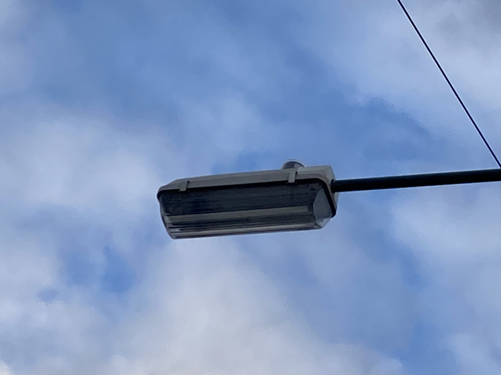
Location
It was replaced in May 2024 with a Schreder Axia 3
Another angle of the XGS104
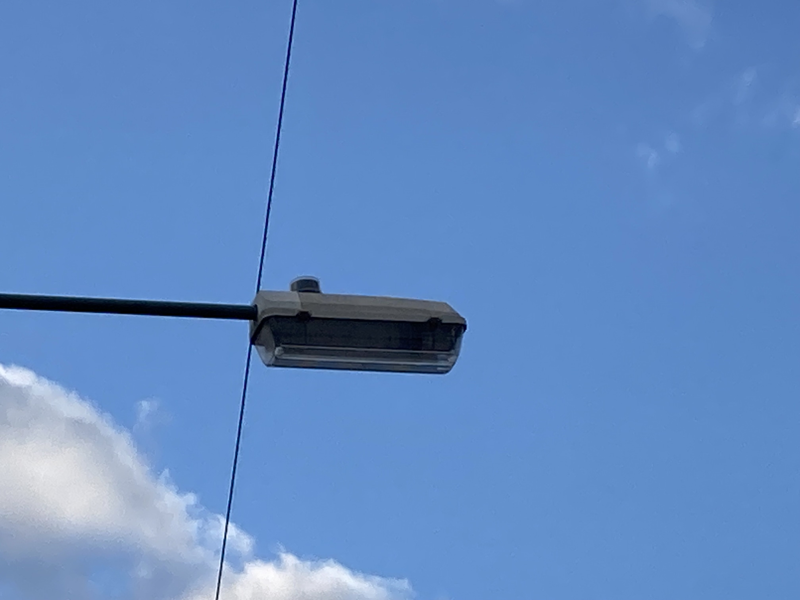
An Urbis Sapphire 1 that replaced another XGS104 in 2018
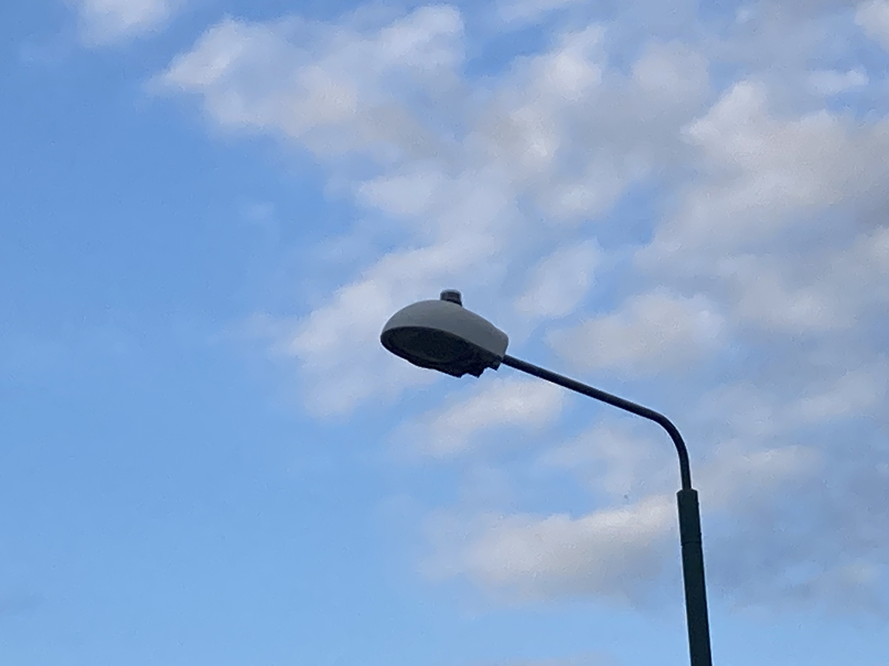
Location
A Phosco P224
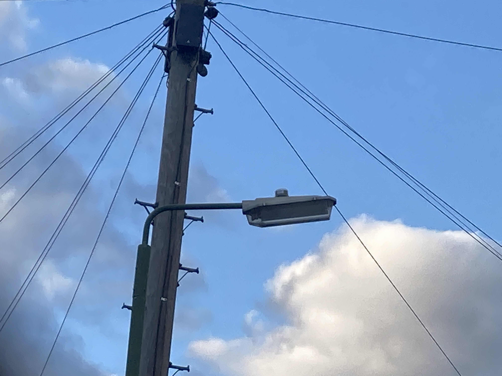
Location
It was replaced in May 2024 with a Schreder Axia 3 (it is hard to see)
A Phosco P226
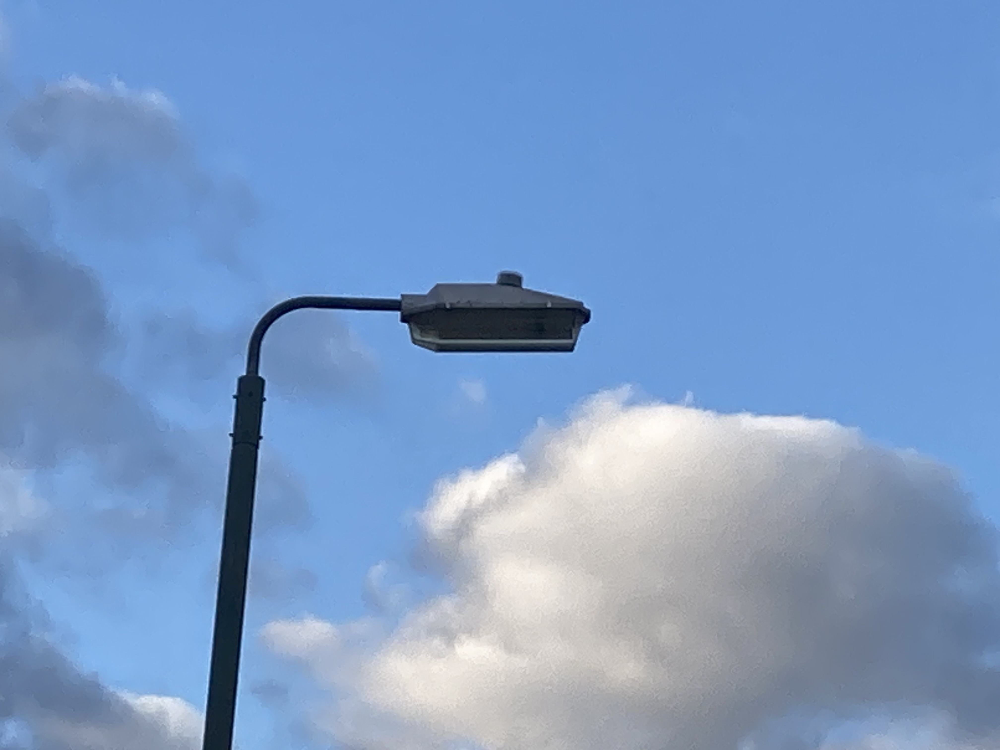
Location
An Urbis ZX3 that replaced a GEC Z9554M (which hadn't been working for a while) in 2016
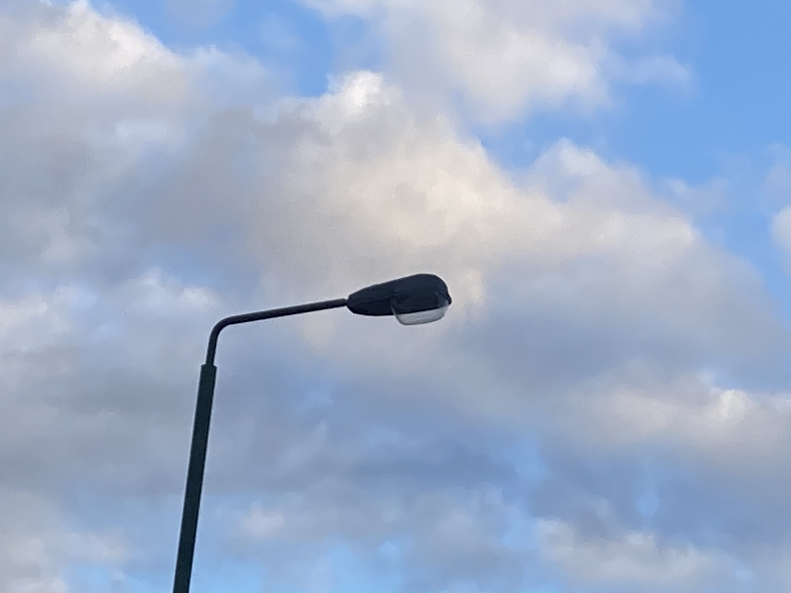
Location
Another Philips XGS104
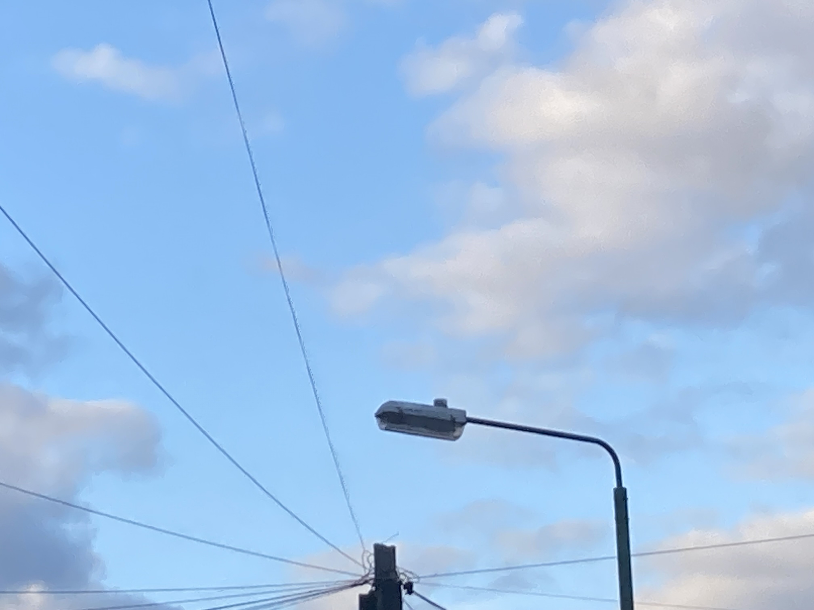
Location
Another Phosco P224
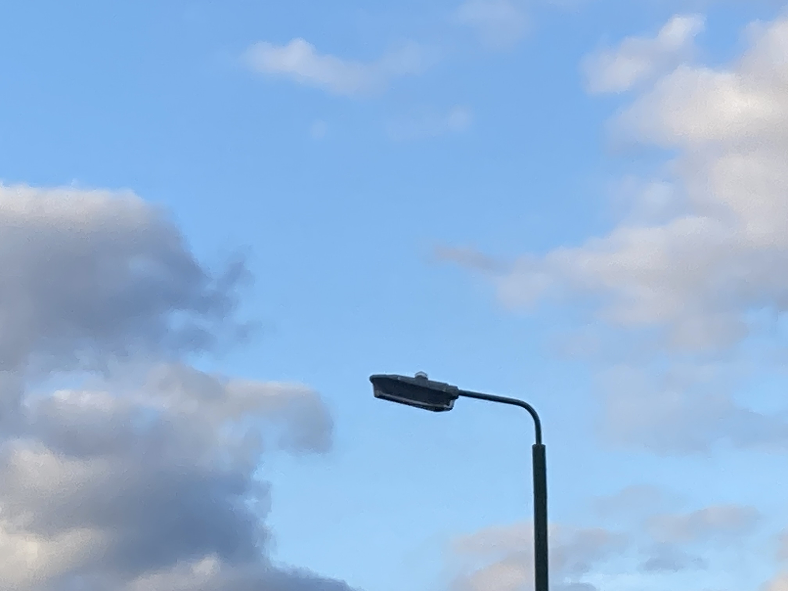
Location
It was replaced in May 2024 with a Schreder Axia 3
A dayburning Phosco P224
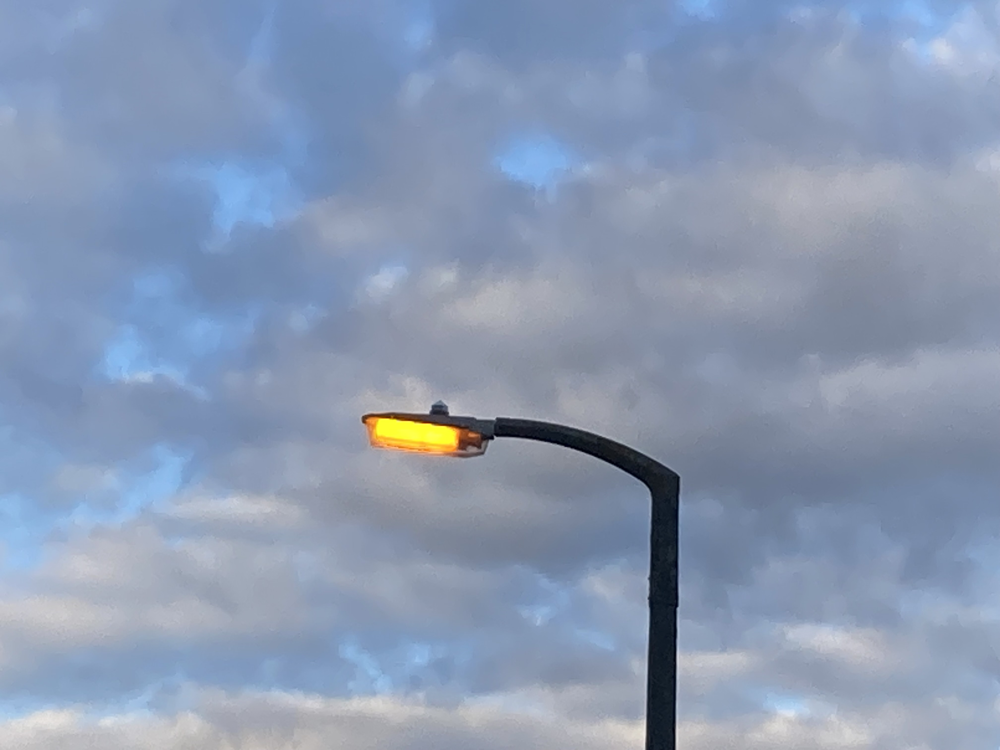
Location
A closeup of the P224
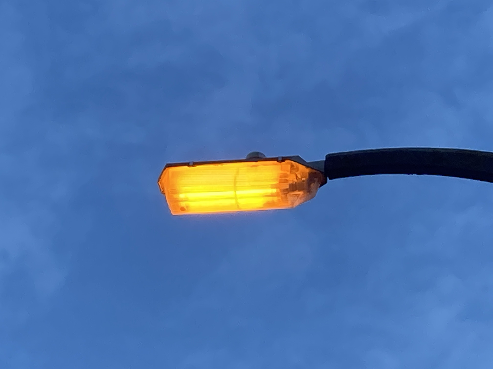
Another angle of the P224
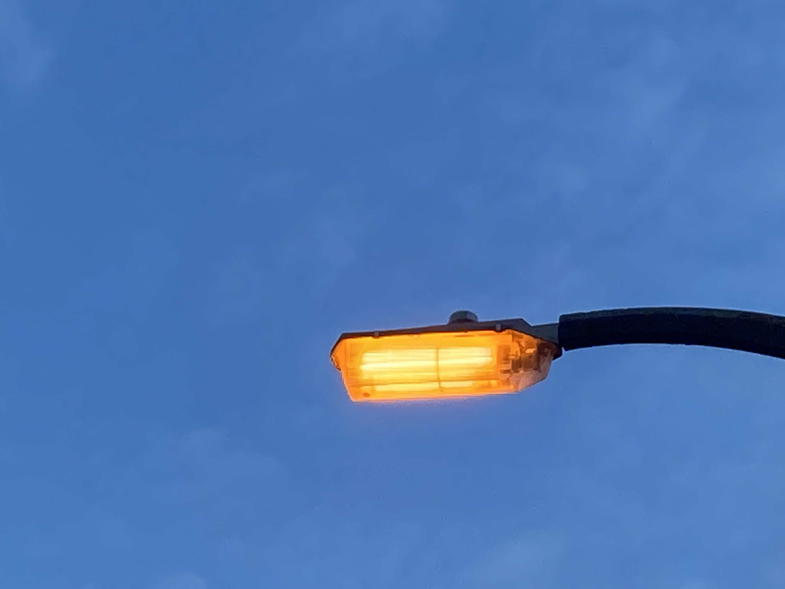
Somehow, all of the installations that weren't replaced in May 2024 were still surviving as of 5th October 2024.
Lighting installations
TfL Red Routes
A217
Most Lighting on the A217 consists of DW Windsor Kirium Pro 2s, running 64 LEDs (not sure of the wattage), which were installed in 2017, but some lighting in the southern end of the road is still Urbis ZX2s, which I believe run 250W SON.
DW Windsor Kirium Pro 2
Urbis ZX2
Philips Luma Mini BGP621
CU Phosco P862
A24
Most lighting on the A24 consists of Urbis ZX3s, although casual replacements with other streetlights also exist.
CU Phosco P862
Urbis ZX3
Urbis ZX3 curved tempered glass
Philips Luma 1 BGP623
Philips Luma gen2 Mini BGP703
Philips Iridium SGS254
CU Phosco P850
A232
The A232 has a diverse mix of lighting from early LED Philips Speedstars, Philips Iridiums, Urbis ZX2s, CU Phosco P863s, DWW Strands? (and an Urbis Albany that escaped replacement), etc.
CU Phosco P863
Urbis Albany
DWW Strand A?
Urbis ZX2
CU Phosco P862
Urbis ZX2 FG
Philips Iridium SGS254
Philips Luma 1 BGP623
DW Windsor Kirium Pro 2
Philips SpeedStar BGP323
DWW Strand A
CU Phosco P862
WRTL Arc 90 (or possibly 80)
Sutton Council
Sutton mostly has Axias, Teceos, Amperas, Axia 3 Evos, Albanies, and possibly P224s, P226s, Z9454s, and other SOX. Some of this includes some rare survivors.
History
I believe Sutton was orignally lit with ESLA GLS lanterns, but replacement of these started in the early 1970s. Suprisingly, some survived until 2002. The SOX which started replacing the eslas in the 1970s was originally mostly Phosco P224s and GEC Z9454s. Some GEC Z9536s and top-entry Beta 5s also appeared, although these likely replaced mercury lanterns on older concrete columns instead. Oddly, the P224s (mostly) run 35W SOX, even though they are designed for 55W SOX. And similarly, the GEC Z9454s (mostly) run 55W SOX, even though they were designed for 90W SOX (although I believe it was originally designed for SO/H or possibly SOI/H). Why this is i'm not sure but they probably weren't like that originally. Over time, casual replacements became more and more common, firstly with P224s (for both 35 and 55w) on concrete columns, and then on steel columns, and then P226s, and finally XGS103s and XGS104s in the last few years before moving to SON, CPO, and LED for casual replacements. P567s also appeared in a few places, some of which I believe replaced the last ESLAs. One area received P224s on steel columns, likely the last area to be relit en masse with SOX. ZX1s with refractor bowls were used on many estates and some other areas. Before LED "upgrades", main roads usually had Iridiums or ZX2s, although some had GEC Z9554Ms and remote-geared Philips MA90s and 50s. I'm not sure what was there before then but it was definitely something on concrete columns (as a few were missed out and still survive to this day somehow, and they still work too). In the early-mid 2010s, this stock started to be upgraded to LED (mostly with Axias and Teceos but also Amperas).
Some of the most common installations (although the SOX installations have become significantly rarer since February 2024; I estimate only around 100 survive)
Urbis Teceo 1
Urbis Teceo 2
Urbis Axia 1
Schreder Axia 3
Schreder Axia 3 Evo
Phosco P224
Phosco P226
GEC Z9454
Urbis Saturn
Urbis Albany
Philips XGS103
Philips XGS104
WRTL Arc 80
WRTL 2600
WRTL 2015
Urbis Sapphire 1
DW Windsor Kirium Pro Mini
GEC Z9536
Philips ClearWay gen2
DW Windsor Kirium Eco Midi
CU Phosco P567
TfL Red Routes
- Urbis ZX2 DB 250W SON
- Urbis ZX3 FG 250W SON
- Urbis ZX3 DB 250W SON
- Philips Iridium SGS254 250W SON
- Philips SpeedStar BGP323 160 LED
- Phosco P862 64 LED
- DWW Kirium Pro 2 64 LED
- DWW Strand A+ 32 LED
- Philips Luma Mini BGP621 40 LED
- Philips Luma 1 BGP623 80 LED
- Urbis Albany 250W SON
- Phosco P850 36 LED
Sutton Main Road
- Urbis Teceo 1 32 LED
- Urbis Teceo 1 48 LED
- Urbis Teceo 2 56 LED
- Urbis Teceo 2 64 LED
- Urbis Teceo 2 72 LED
- Urbis Teceo 2 80 LED
- Urbis Teceo 2 88 LED
- Urbis Teceo 2 96 LED
- Urbis Axia 48 LED
- Urbis Ampera Midi 64 LED
- Urbis Ampera Maxi 128 LED
- Indal Arc 80 100W SON
- Indal Arc 80 150W SON
- Thorn Civic 2 150W CDO
- DWW Kirium Eco Max 36 LED
-
- Schreder Axia 3 32 LED
- Urbis ZX2 150W SON (unconfirmed)
- Philips MA90 90W SOX (unconfirmed)
- Urbis ZX3 150W SON
- GEC Z9454 90W SOX
- Philips SGS203 100W SON
- Urbis ZX2 100W SON
- Revo C13723/S Dalek 90W SOX
- WRTL Luma 2 120 LED
- Philips SGS203 150W SON (unconfirmed)
- Philips SGS253 Iridium Curved Glass 150W SON
- Urbis Stratos 4x???W SON (unconfirmed)
Sutton Side Road
- Urbis Axia 16 LED
- Urbis Axia 24 LED
- Urbis Axia 32 LED
- Urbis Axia 40 LED
- Urbis Axia 48 LED
- Schreder Axia 3 Evo 16 LED
- Schreder Axia 3 32 LED
- Phosco P224 35W SOX
- GEC Z9454 55W SOX
- Phosco P224 LED Retrofit (35w type)
- Phosco P224 55W SOX
- Phosco P226 35W SOX
- Phosco P226 55W SOX
- Philips XGS104 55W SOX
- WRTL Arc 80 50W SON (unconfirmed)
- GEC Z5676 35W SOX (unconfirmed)
- Urbis Sapphire 1 60W CPO
- Urbis Sapphire 1 45W CPO
- WRTL 2600 70W SON
- Philips Iridium SGS252 50W SON
- Urbis ZX1 70W SON (unconfirmed)
- WRTL Arc 80 70W SON
- Urbis ZX1 50W SON
- DWW Kirium Eco Midi 24 LED
- WRTL 2015 50W SON
- WRTL 2600 50W SON (unconfirmed)
- WRTL Stela Wide 52 LED
- Phosco P567 50W SON
- GEC Z9454 35W SOX
- Philips XGS103 35W SOX
- Philips XGS104 35W SOX
- Phosco P226 LED Retrofit (55w type)
- Philips SGS201 50W SON
- Urbis Sapphire 1 70W SON (unconfirmed)
- GEC Z9538 55W SOX (unconfirmed)
- DW Windsor Stratum 50W SON?
- Designplan Concourse 80W MBF? (unconfirmed)
- Unknown Squarish lantern 50W SON? (unconfirmed)
- Schreder Axia 2 16 LED
Sutton Heritage
- Urbis Albany 150W SON
- Urbis Albany 100W SON
- Urbis Albany 70W SON
- Urbis Abbey 50W SON
- Urbis Albany 100W CDO
- Urbis Albany 250W CDO
- Urbis Albany 70W CDO
- CU Phosco P516 50W SON
Sutton Contemporary
- Square Box??? 2x90W CPO
- Urbis Saturn 250W SON
- Urbis Saturn 70W SON
- Philips Iridium SGS254 250W SON
- Philips Iridium SGS254 150W SON FG
Zebra Crossings
- Philips SGS203 70W SON
- Urbis Sapphire 1 45W CPO?
- Philips SGS203 50W SON?
- Urbis Ampera 32 LED
- Urbis Axia 40 LED?
- WRTL Stela Wide 36 LED
- WRTL Stela Wide 52 LED
Page last updated 3rd December 2024
Return to the home page